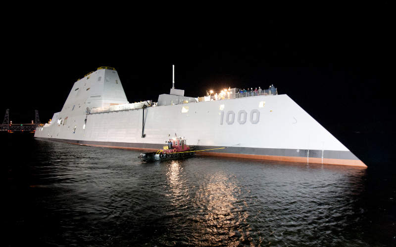
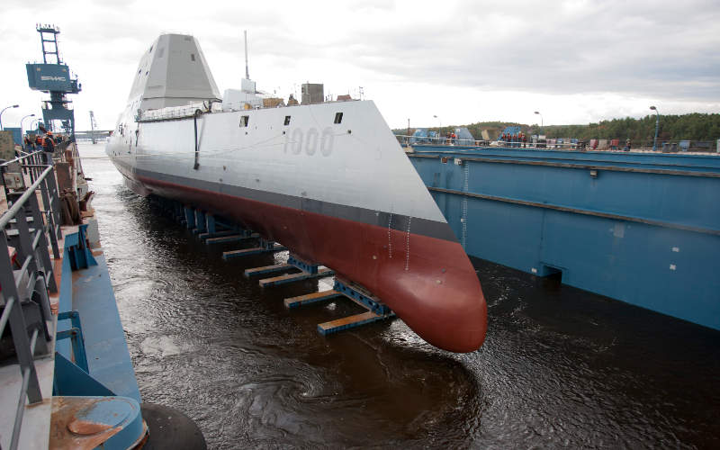
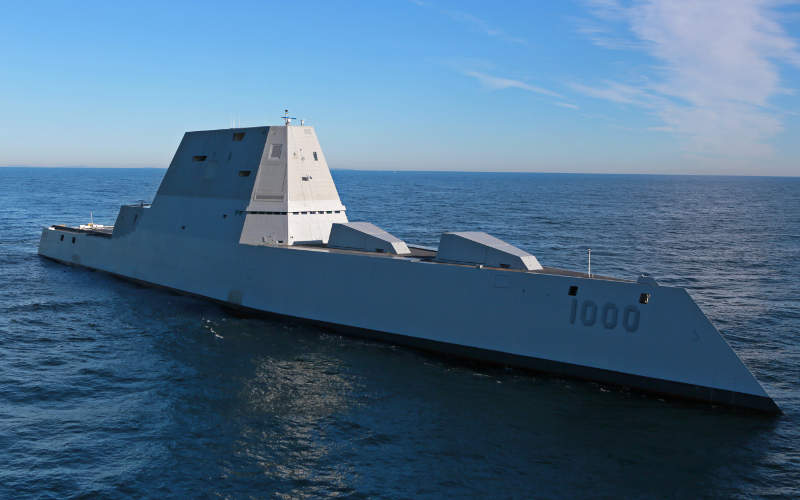
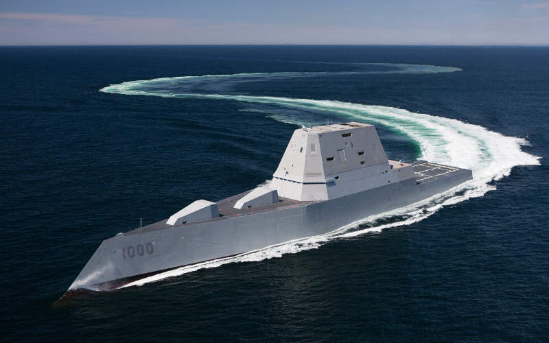
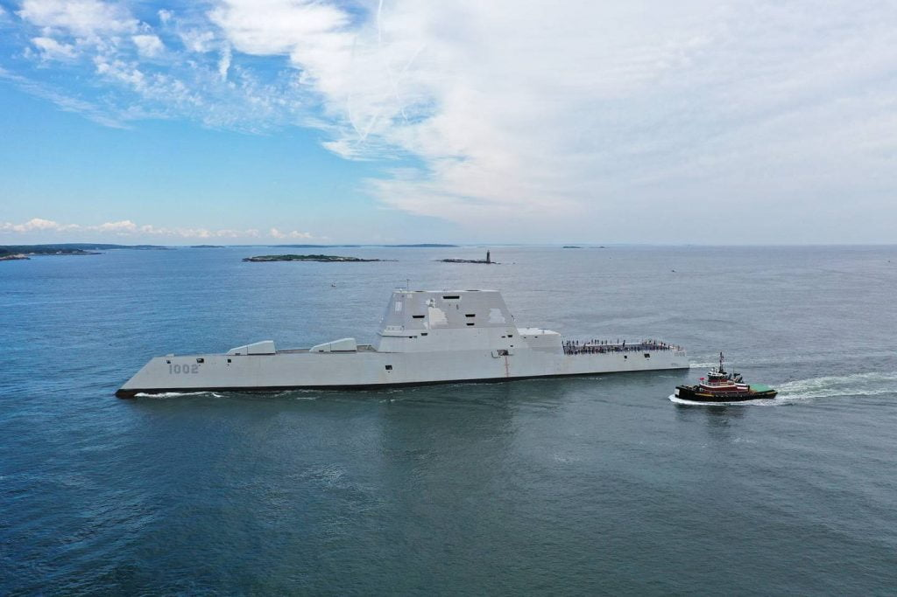
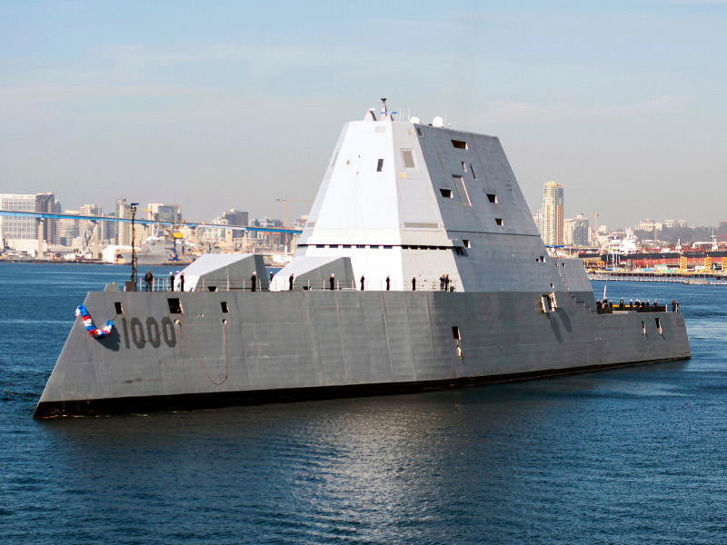
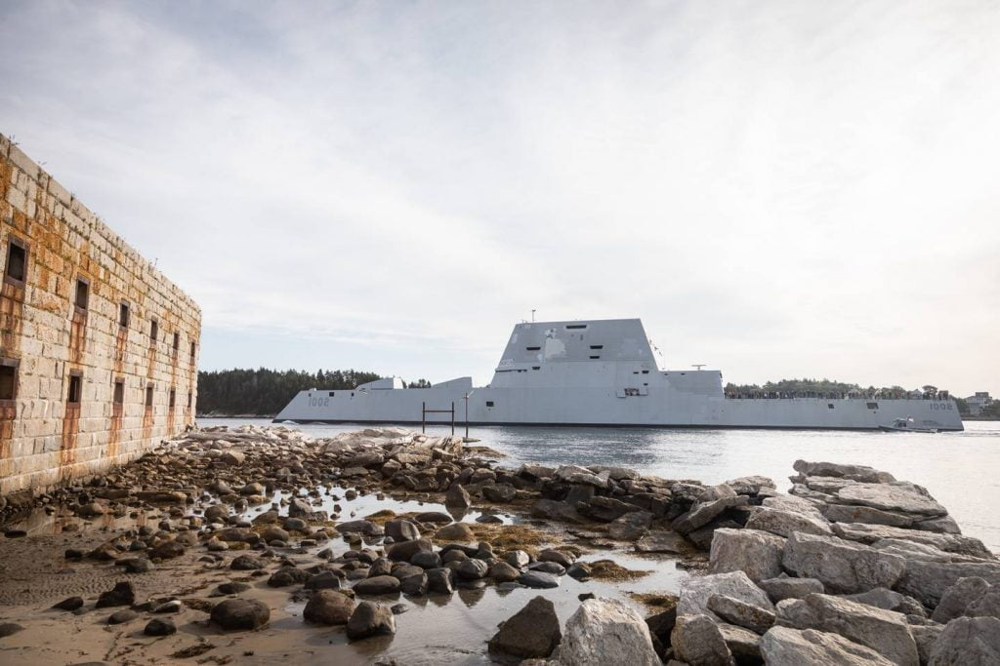
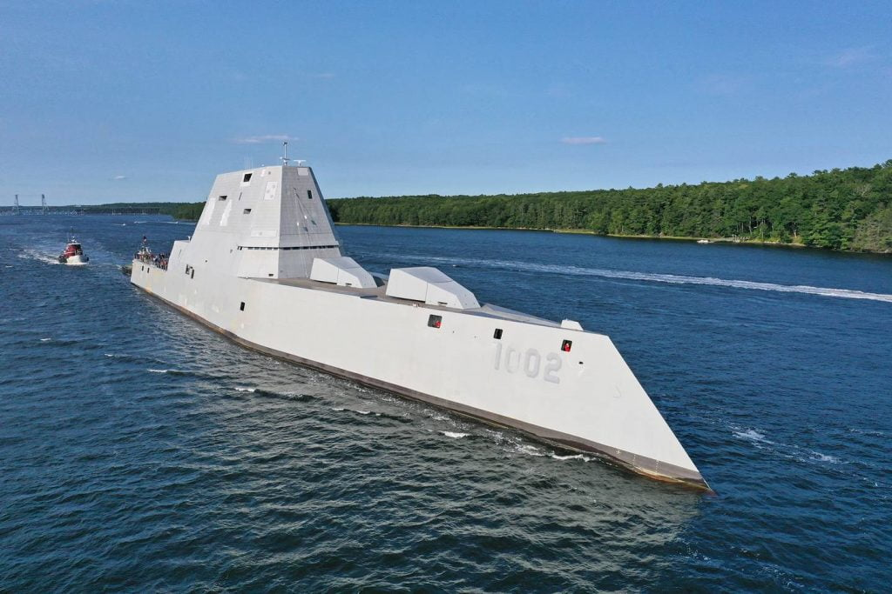

Zumwalt အတန်းအစား ကိုယ်ပျောက် စစ်သင်္ဘောတွေအနက် ပထမဆုံး စစ်ရေယာဉ် ဖြစ်တဲ့ DDG-1000 ကို ၂၀၁၆ ခုနှစ်မှာ အမေရိကန် ရေတပ်မတော်ကို လွှဲပြောင်းပေးအပ် ခဲ့ပါတယ်။ ပင်လယ်ပြင် စမ်းသပ်မှုတွေ ပြုလုပ်အပြီးမှာတော့ ၂၀၁၆ အောက်တိုဘာမှာ ဒီ DDG-1000 ဟာ တပ်တော်ဝင်ပြီး စစ်ဆင်ရေး တာဝန်များကို စတင် ထမ်းဆောင်နေပြီး ဖြစ်ပါတယ်။

မူလက ကိုယ်ပျောက် စစ်ရေယာဉ် ၈ စင်းကနေ ၁၂ စင်းထိ လိုအပ်မယ်လို့ ခန့်မှန်းထားခဲ့ပါတယ်။ ဒါပေမယ့် ၂၀၀၈ ခုနှစ် မှာတော့ အမေရိကန် ရေတပ်မတော်က ပထမ ၂ စင်း တည်ဆောက်ပြီးရင် ကျန် ရေယာဉ်တွေ ဆက်မဆောက်တော့ဘူးလို့ ကြေငြာ ခဲ့ပါတယ်။ ဒါပေမယ့်လဲ ၂၀၀၉ ခုနှစ်မှာတော့ တတိယမြောက် Zumwalt အမျိုးအစား ရေယာဉ် တစ်စင်း ထပ်ဆောက် မယ်လို့ ကြေငြာတဲ့ အတွက် စုစုပေါင်း ၃ စင်းအထိ ရှိလာခဲ့ပါတယ်။
ဒီ Zumwalt ကိုယ်ပျောက် စစ်ရေယာဉ် တွေဟာ အမေရိကန် ရေတပ်ရဲ ပထမဆုံး လျှပ်စစ်စွမ်းအားသုံး ရေယာဉ်တွေ ဖြစ်ကြပါတယ်။ ဒါ့အပြင် ဒီရေယာဉ်မှာ နောက်ဆုံးပေါ် ထောက်လှမ်းရေး ကိရိယာတွေ၊ ဆက်သွယ်ရေး နည်းပညာတွေနဲ့ စစ်လက်နက် ပစ္စည်း တွေကိုလဲ တပ်ဆင်ထားပါတယ်။

စစ်ရေယာဉ်ဒီဇိုင်း
ဒီဇိုင်းအားဖြင့် ပြောရရတော့ ဒီစစ်ရေယာဉ်ဟာ အတော်လေး ထူးခြားတဲ့ ဒီဇိုင်း ရှိတယ်လို့ ဆိုရမှာပါ။ ဒီ ရေယာဉ်ကို ခပ်လှမ်းလှမ်းက ကြည့်လိုက်ရင် သင်္ဘောကြီး မှောက်ထားသလို ပုံမျိုး ဖြစ်နေတာ တွေ့ရမှာပါ။ သင်္ဘော ဦးက ပုံမှန် သင်္ဘာတွေနဲ့ ပြောင်းပြန် ရှေ့ဖက် အောက်ကို ငိုက်ပြီး ဆင်းသွားပါတယ်။ ဘေးဖက်တွေကလဲ အောက်ဖက်ကို စောင်းပြီး ငိုက်ဆင်း သွားကြတာပါ။ ဒီ ဒီဇိုင်းက ရေယာဉ်ရဲ့ ရေဒါ ဖြတ်ပိုင်းပုံကို သေးငယ်စေမှာ ဖြစ်ပါတယ်။ (ရေဒါ ဖြတ်ပိုင်းပုံ ဆိုတာက သင်္ဘောကို ရေဒါမှာ မြင်ရမယ့် ပုံရိပ်ကို ပြောတာပါ။)
ဒီ စစ်ရေယာဉ်ကို ဒီဇိုင်းဆွဲတဲ့ နေရာမှာ ရေဒါ ဖြတ်ပိုင်းပုံရိပ်တင် မက အနီအောက်ရောင်ခြည် (Infrared) ခေါ်တဲ့ အပူဖြာထွက်မှုလဲ လျှော့နဲအောင် ဒီဇိုင်းထုတ် ထားပါတယ်။ ဒီလို ဖြစ်ဖို့ သင်္ဘော ကိုယ်ထည်နဲ့ အပေါ်ပိုင်း အဆောက်အအုံတွေကို ရေဒါ ရောင်ပြန် နည်းအောင် ဒီဇိုင်းဆွဲထားသလို အပူထွက်ပေါက် (exhaust) ကိုလဲ ဖုံးအုပ်ပြီး တည်ဆောက်ထားပါတယ်။

တပ်ဖွဲဝင်အင်အား
ဒီ စစ်ရေယာဉ်ပေါ်မှာ ရေယာဉ် အဖွဲ့သား စုစုပေါင်း ၁၅၈ ယောက် လိုက်ပါ တာဝန်ထမ်းဆောင်မှာ ဖြစ်ပါတယ်။ ဒီ အဖွဲ့သား စာရင်းမှာ ရေယာဉ်ပေါ် ပါဝင်မယ့် ရဟတ်ယာဉ် အဖွဲ့သားတွေလဲ ပါဝင်ပါတယ်။ ဒီ အရေအတွက်ဟာ အခြား ဖျက်သင်္ဘော တွေမှာ လိုအပ်တဲ့ အဖွဲ့ဝင် အင်အားထက် အများကြီး လျှော့နည်းပါတယ်။ ဥပမာ Spruance အတန်း ဖျက်သင်္ဘော တွေမှ တပ်ဖွဲ့ဝင် ၃၃၀ လိုအပ်ပြီး Oliver Hazard Perry frigates ဖရီးဂိတ် စစ်သင်္ဘော တွေမှာတော့ အင်အား ၂၀၀ လိုအပ်ပါတယ် (ဖရီးဂိတ် ဆိုတာ ဖျက်သင်္ဘော ထက် သေးပါတယ်)။

ဒီ စစ်ရေယာဉ် တစ်စင်းလုံးကို အပြည့်အဝ ကွန်ပြူတာနဲ့ ထိန်းချုပ် မောင်းနှင်တာ ဖြစ်ပါတယ်။ ဒီစနစ်ကိုtotal ship computing environment (TSCE) လို့ ခေါ်ပါတယ်။ ဒီ ကွန်ပြူတာ ပရိုဂရမ်မှာ ပရိုဂရမ် စာကြောင်းရေ ၆ သန်းကျော်တောင် ပါဝင်တယ်လို့ ဆိုပါတယ်။
အာရုံခံထောက်လှမ်းရေးကိရိယာများ
ဒီ ရေယာဉ်မှာ ပစ်မှတ်တွေ အာရုံခံ ထောက်လှမ်းနိုင်ဖို့ ရေဒါ စနစ် နှစ်ခုကို တပ်ဆင်ထားပါတယ်။ Dual Band ရေဒါ စနစ်ကတော့ ပုံမှန် ပစ်မှတ်တွေကို ရှာဖွေ ထောက်လှမ်းဖို့ အသုံးပြုမှာ ဖြစ်ပါတယ်။ AN/SPY-3 multifunction rader ကတော့ ပုံမှန် ရေဒါတွေ ရှာဖွေ ထောက်လှမ်းရ ခက်တဲ့ ဒရုန်းလို ပစ်မှတ်တွေ နဲ့ ရေပြင်နဲ့ ကပ်ပျံလာမယ့် သင်္ဘောဖျက် ခရုစ် ဒုံးကျည်တွေကို ရှာဖွေ ထောက်လှမ်းဖို့ ဖြစ်ပါတယ်။ နောက်ပြီး လေကြောင်း ပစ်မှတ်တွေ ပစ်ခတ်မှု ထိန်းချုပ်ရေး အတွက်လဲ ဆောင်ရွက်နိုင်မှာ ဖြစ်ပါတယ်။
ရေအောက် ပစ်မှတ်တွေ (ရေငုပ်သင်္ဘောတွေ) ရှာဖွေ ထောက်လှမ်းဖို့ အတွက်လဲ ဆိုနာ ၃ လုံး တပ်ဆင်ထားပါတယ်။ ဒီ ၃ ခုက သင်္ဘော ကိုယ်ထည် မှာ တပ်ဆင်ထားတဲ့ ကြိမ်းနှုန်းမြင့် ဆိုနာ ၁ ခု၊ ကြိမ်နှုန်းမြင့် ဆိုနာ ၁ ခုနဲ့ သင်္ဘောနောက်ကနေ ကြိုးနဲ့ တွဲပြီး ဆွဲယူရတဲ့ towed array sonar တွေပဲ ဖြစ်ပါတယ်။

ဒီ စစ်ရေယာဉ်မှာ ထူးခြားတာကတော့ သူ့မှာ တပ်ဆင်ထားတဲ့ peripheral vertical launch system (PVLS) ခေါ်တဲ့ ဒုံးလွှတ်စင် တွေပဲ ဖြစ်ပါတယ်။ အခြား ရေယာဉ်တွေမှာ ဒုံးလွှတ်စင်တွေကို အများအားဖြင့် သင်္ဘော့ရဲ့ ရှေ့ပိုင်း နဲ့ အလယ်ပိုင်း နေရာတွေမှာ တပ်ဆင်ထားလေ့ ရှိပါတယ်။ ဒီ သင်္ဘောမှာတော့ ဒုံးလွှတ်စင်တွေကို တစ်နေရာထဲမှာ စုမထားပဲ သင်္ဘောရဲ့ ကုန်းပါတ်ပေါ်မှာ အနှံ့အပြား ဖြန့်ကျက်ထားရှိပါတယ်။ ဒီ စနစ်မှာ ဒေါင်လိုက် ပစ်ခတ်နိုင်တဲ့ ဒုံးလွှတ်စင် ၂၀ ပါဝင်ပြီး ကုန်းပါတ်ပေါ် အနှံ့အပြားမှာ ဖြန့်ကျက်ထားရှိခြင်းဖြင့် ရန်သူ့လက်နက် ထိမှန်ပြီး ဒုံးကျည် အားလုံး ဖျက်ဆီး ခံရမယ့် အန္တရာယ်ကို လျော့နည်းစေပါတယ်။
ဒီ ဒုံးကျည် စနစ်မှာ တပ်ဆင်တဲ့ ဒုံးကျည်တွေက mk57 VLS ဒုံးကျည် စနစ် ဖြစ်ပါတယ်။ ဒီစနစ်မှာ မြေပြင်နဲ့ ရေပြင် ပစ်မှတ်တွေကို ပစ်ခတ်ဖို့ တိုမဟော့က် ခရုစ် ဒုံးကျည် (tomahawk cruise missile) တွေ တပ်ဆင်နိုင်ပြီး လေကြောင်း ပစ်မှတ် တွေအတွက်တော့ Sea Sparrow missile တွေကို တပ်ဆင်နိုင်မှာ ဖြစ်ပါတယ်။

အနီကပ် ပစ်မှတ်တွေကို ပစ်ခတ်နိုင်ဖို့ အတွက်တော့ BAE System က ထုတ်လုပ်တဲ့ ၅၇ မမ mk110 ရေတပ်သုံး အမြှောက်ကို တပ်ဆင်ထားပါတယ်။ ဒီ သေနတ်ဟာ တစ်မိနစ်ကို ကျည် အတောင့် ၂၂၀ ပစ်ခတ်နိုင်ပြီး စုစုပေါင်း အကွာအဝေး ၁၄ ကီလိုမီတာ (၉ မိုင်) အကွာအထိ ပစ်ခတ်နိုင်ပါတယ်။ ဒီ လက်နက်တွေ ထိန်းချုပ်ပစ်ခတ်ဖို့ လိုအပ်တဲ့ ပစ်မှတ်ရှာ ကိရိယာ အနေနဲ့ အနီအောက် ရောင်ခြည်နဲ့ ရိုးရိုး ကင်မရာ ၅ ခု ကို တပ်ဆင်ထားပါတယ်။ ဒီ အနီအောက်ရောခြည် ကင်မရာတွေဟာ ရေယာဉ် ပတ်လည် ၃၆၀ ဒီဂရီက ပစ်မှတ်တွေကို ရှာဖွေ ထောက်လှမ်းနိုင်မှာ ဖြစ်ပါတယ်။
အင်ဂျင်
ဒီ စစ်ရေယာဉ်ဟာ အမေရိကန် ပြည်ထောင်စု ရေတပ်ရဲ့ ပထမဆုံးသော လျပ်စစ်စွမ်းအင်သုံး အင်ဂျင်တပ် စစ်ရေယာဉ် ဖြစ်ပါတယ်။ ဒီ အင်ဂျင်ကနေ ၇၂ မီဂါဝပ် စွမ်းအင် နဲ့ ညီမျှတဲ့ တွန်းကန်အားကို ထုတ်ပေးပါတယ်။ ဒါပေမယ့် ဒီ လျပ်စစ် အင်ဂျင်ကို မောင်းနှင်ဖို့ အတွက်တော့ ရိုးစ်ရွိုက်စ် (Rolls-Royce MT30) ဂက်စ် တာဘိုင် အင်ဂျင် နှစ်လုံး တပ်ဆင်ထားပါတယ်။

တန်ဖိုး
ဒီ စစ်ရေယာဉ် တွေရဲ့ တန်ဖိုးကတော့ မသေးပါဘူး။ တစ်စင်းရဲ့ တန်ဖိုးဟာ US ဒေါ်လာ ၄ ဘီလီယံ ကျော်ပါတယ်။ ဒါဟာ အာလေဘာခ် အတန်း ဖျက်သင်္ဘော တွေရဲ့ တန်ဖိုး ဖြစ်တဲ့ ၁.၈ ဘီလီယံထက် အဆမတန် များတဲ့ တန်ဖိုးပါ။ ဒါ့ကြောင့်လဲ ဒီရေယာဉ် ဟာ ပေးရတာနဲ့ တန်တဲ့ စွမ်းဆောင်ရည် ရှိရဲ့လားလို့ မေးခွန်းထုတ်ခံရတာလဲ ဖြစ်ပါတယ်။ ရေတပ်က ဒီ သင်္ဘော စီမံကိန်းကို ဖျက်သိမ်းလိုက်တဲ့ အထဲမှာ ကြီးတဲ့ အချက်တချက်ကတော့ ဒီ ကုန်ကျစရိတ် များတာလဲ တစ်ခု အပါအဝင် ဖြစ်မယ်လို့ ယူဆကြပါတယ်။

DDG 1000 Zumwalt Class – Multimission Destroyer | Naval Technology
Third Zumwalt stealth destroyer completes builder’s trials in Maine | DefenseNews